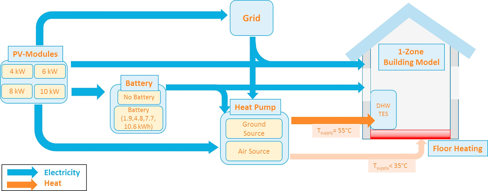
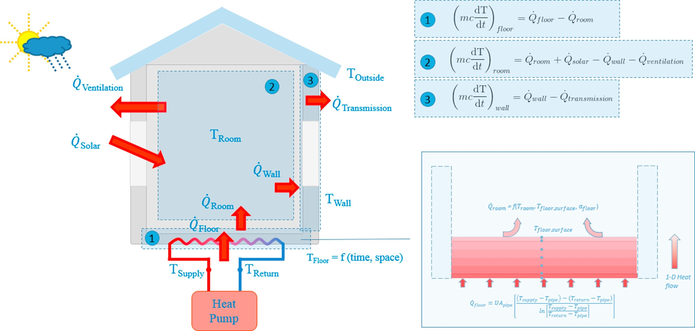

Overview:
A decentralized, self-sustaining energy grid is modeled using Simulink and MATLAB. The purpose of this grid is to prevent energy-loss over long transmission lines as well as provide electricity and heating to buildings using one source. Electricity is provided using photovoltaic (PV) cells and stored using batteries as well as thermal-energy storages (TES), e.g. a heated water tank. The Simulink and MATLAB models, despite engineered to be identical, have provided different simulation results. It was my duty to deconstruct each model, fit it to a specified weather model (Klucher weather model), and make them identical.
Personal Statement:
While studying abroad in Reutlingen, Germany at Reutlingen Hochschule, there is a couple month grace period from January to mid-March where the german winter-semester is wrapping up and preparations are made for the summer semester (March - July). Since I arrived in Germany in January, I had a couple months before courses started. During this period, I was assigned to a professor, Dr. Bernd Thomas, to conduct research for an intercollegiate effort regarding a novel, decentralized energy system.
As my research was officially wrapping up, I decided to take it upon myself to continue working for Dr. Thomas throughout the summer semester. However, due to COVID-19, I was removed from Reutlingen on March 15th 2020 to return to the United States, thus ending the opportunity.
Literature:
Fig. 1: Visual of the various working elements of the simulation
Fig. 2: Heating aspect being integrated

Fig. 3: Timeseries simulation showing predicted energy consumption, load, energy storage, and building temperature
Media Citation(s):
Ajit Toradmal, Thomas Kemmler, and Bernd Thomas. “Boosting the share of onsite PV electricity utilization by optimized scheduling of a heat pump using buildings thermal inertia”. In: Applied Thermal Engineering 137 (2018), pp. 248–258. issn: 1359-4311. doi: https://doi.org/10.1016/j.applthermaleng.2018.03.052. url: http://www.sciencedirect.com/science/article/pii/S1359431117359902.